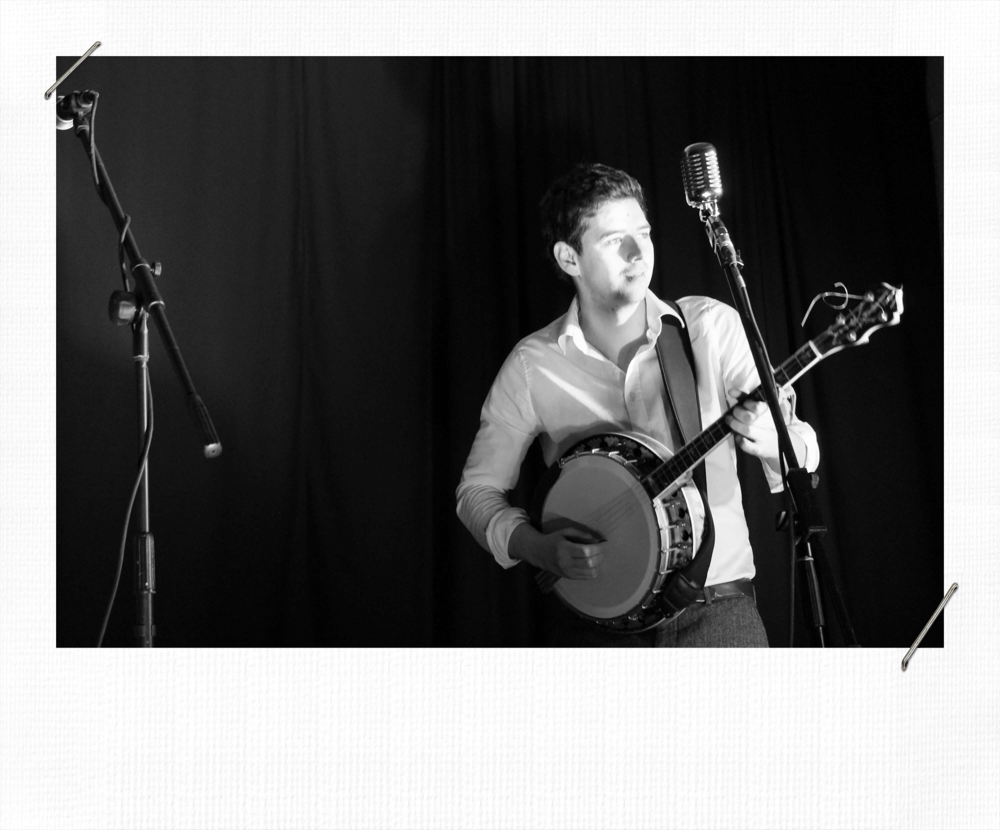
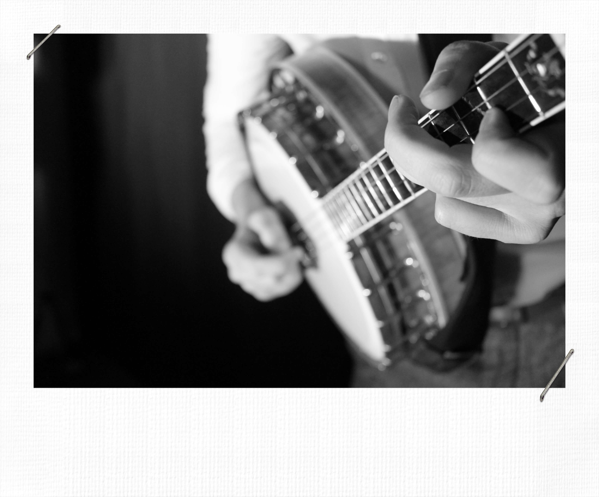
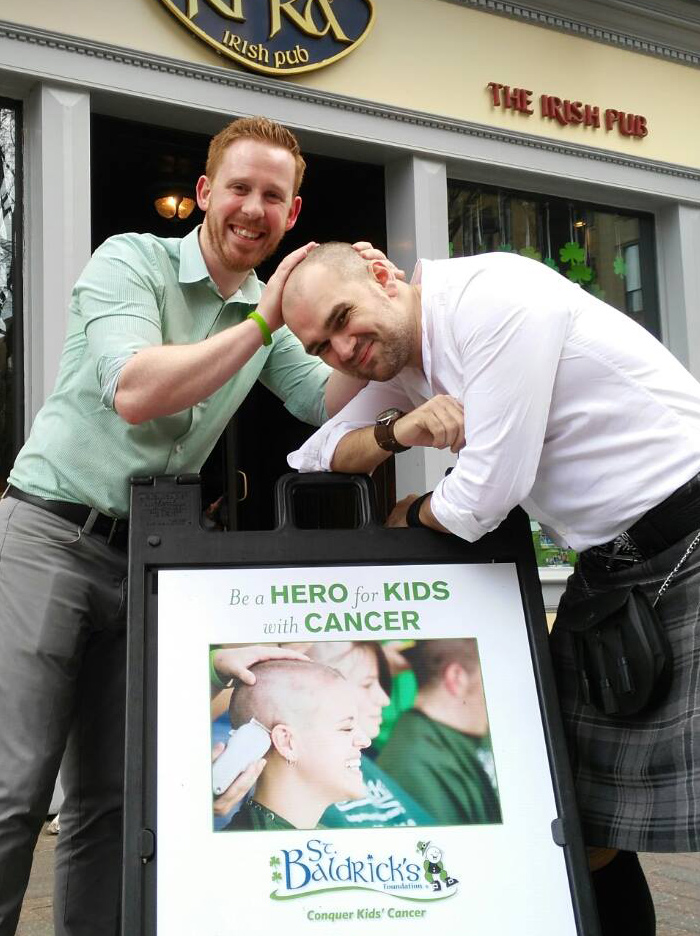

Cumasc Gael || G.I.G (God Is Good) || Website Exclusive Demo
Cumasc Gael are proud to present this exclusive demo recording of their forthcoming single.
Musicians the world over often talk about 'Gigs' without giving much thought to the word itself.
It's widely believed that "gig" is an acronym for "God Is Good" and was used by blues and jazz musicians in the American South to describe thier working status. (ie. I have work therefore God Is Good) Cumasc Gael's G.I.G (God Is Good) however, tells the lamentable tale of a performer who has sadly and somewhat ironically fallen out of love with his craft...
"...God is good when I'm heading for home!"
Cumasc Gael || Gagged & Bound: Live & Unplugged in Gartlans || Website Exclusive
Enjoy this exclusive live recording from the legendary 'Gartlans' pub in Kingscourt, Co. Cavan
Without a doubt the band's most recognisable song to date. Even with significantly reduced audio quality this recording offers an intreguing preview into the possible instrumental and dynamic arrangment of its forthcoming high fidelity, studio counterpart
Video
Gagged & Bound: Live on Fox 46
Cumasc Gael performing their upcoming single 'Gagged and Bound' on Fox 46
Gallery
Charlotte N.C



Washington D.C.
Tour Photo's
Mailing List
Sign up for more dates plus all the latest Cumasc Gael news.